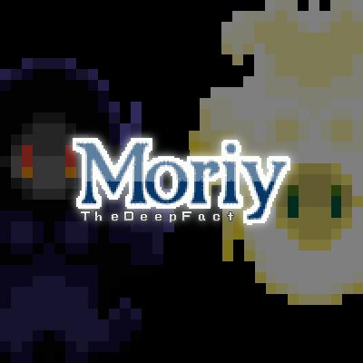

ワタシにしては珍しく自動生成ではなくステージクリア型の謎解きゲームです。 毎夜作っては会社の先輩にプレイしてもらってました。 なお、スマホアプリ化には monaca を利用しました。
各ステージの謎を解き明かしてゴールを目指してください。 クリア条件はステージごとに異なります。
操作は左右と上（ジャンプ）のみです。
【注意】
Moriy - the deep fact はJavaScriptで開発しています。 PCやスマートフォンのブラウザで遊べます。
TODO: PWA対応していますので、ホームに追加してオフラインで遊ぶこともできます。